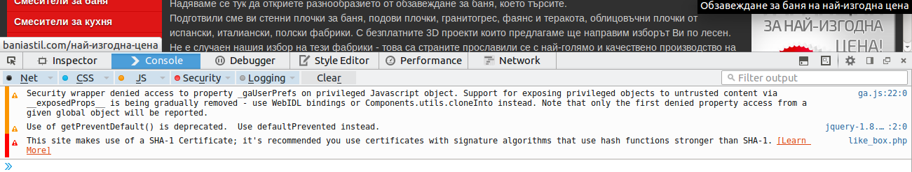
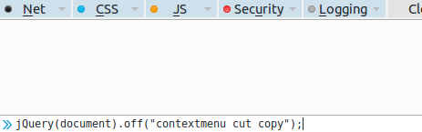

Сайтът на Баня Стил е готин, но има едно неприятно ограничение. Това е скриптът, който блокира контекстното меню на мишката и не може да се копира. Изключително досадно е. Ако човек иска да сравни продукти, трябва да отваря сайта по 10 пъти и да търси всеки по-отделно. Този малък сайт е направен със цел да покаже на потребителите как да заобиколят тази неприятна рестрикция. По-долу можете да прочетете как да стане това. Лесно е. Просто спазвайте описаните инструкций. Има и много по-добър метод - с използването на потребителски скрипт или директно с браузер плъгин, но с оглед на това, че почти никой няма да го ползва мисля да не се ангажирам с разработката му.
Отворете сайта.
Копирайте скрипта, приложен по-долу:
jQuery(document).off("contextmenu cut copy");
Настиснете F12.
Трябва да видите нещо подобно в долната част на екрана си

Пейстнете скрипта, както е показано по-долу и натиснете Enter. Ако ви покаже предупреждение, че първо трябва да напишете allow pasting просто го направете.

Можете да копирате от сайта, колкото си искате.
Стъпките са почти същите, но просто конзолата ще изглежда по-друг начин.